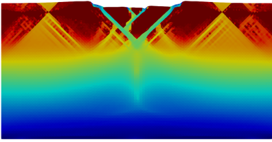

Skip to content

MilleFEuiIle documentation
Toggle navigation menu
⌘
K
MilleFEuiIle documentation
/
Index
Index
A
add_melt_tracers() (m_melting.Melting method)
add_tracers() (m_tracers.Tracers method)
advect_tracers() (m_tracers.Tracers method)
apply_temperature_BC() (in module m_boundary_conditions)
apply_velocity_BC() (in module m_boundary_conditions)
B
BC_heat_transfer (in module m_parameters_docs)
BC_Stokes_problem (in module m_parameters_docs)
C
cfl (in module m_parameters_docs)
check_input_parameters() (in module m_check)
check_tracers() (m_tracers.Tracers method)
closest_point_interpolation() (in module m_postproc)
cohesion() (in module m_rheology)
cohesion_strong (in module m_parameters_docs)
cohesion_weak (in module m_parameters_docs)
composition_interpolation() (in module m_interpolation)
compute_melting() (m_melting.Melting method)
compute_u() (m_equations.Equations method)
cos_perturbation (in module m_parameters_docs)
count_nodes() (in module m_mesh)
cp() (in module m_material_properties)
create_mesh() (m_mesh.MeshModule method)
D
d_grain (in module m_parameters_docs)
DAL_factor (in module m_parameters_docs)
define_boundaries() (m_mesh.MeshModule method)
delete_and_find() (m_tracers.Tracers method)
delete_melt_tracers() (m_melting.Melting method)
detect_oscillations() (in module m_mesh)
E
elasticity (in module m_parameters_docs)
Elements (class in m_elements)
empty_cells_allowed (in module m_parameters_docs)
empty_cells_composition (in module m_parameters_docs)
empty_cells_region (in module m_parameters_docs)
entrainment() (in module m_postproc)
eps_strong (in module m_parameters_docs)
eps_weak (in module m_parameters_docs)
equation_free_surface_bottom() (m_equations.Equations method)
equation_free_surface_top() (m_equations.Equations method)
equation_heat() (m_equations.Equations method)
equation_heat_ini() (m_equations.Equations method)
equation_mesh_displacement() (m_equations.Equations method)
equation_Stokes() (m_equations.Equations method)
Equations (class in m_equations)
eta() (in module m_rheology)
eta_0 (in module m_parameters_docs)
eta_BS() (in module m_rheology)
eta_diff() (in module m_rheology)
eta_disl() (in module m_rheology)
eta_ductile() (in module m_rheology)
eta_eff() (in module m_rheology)
eta_GBS() (in module m_rheology)
eta_max (in module m_parameters_docs)
eta_min_plast (in module m_parameters_docs)
F
find_tracers() (m_tracers.Tracers method)
G
g (in module m_parameters_docs)
G() (in module m_rheology)
G_ice (in module m_parameters_docs)
get_new_stress() (in module m_rheology)
get_new_stress_iter() (in module m_rheology)
H
healing (in module m_parameters_docs)
healing_timescale (in module m_parameters_docs)
height (in module m_parameters_docs)
I
init_cond_profile (in module m_parameters_docs)
inside() (m_boundary_conditions.Point_Fixed_Pressure method)
int_friction_angle2 (in module m_parameters_docs)
integration_method (in module m_parameters_docs)
interface() (in module m_parameters_docs)
internal_melting (in module m_parameters_docs)
introduce_tracers() (m_tracers.Tracers method)
K
k() (in module m_material_properties)
L
length (in module m_parameters_docs)
Load_HDF5() (m_filenames.SaveFiles method)
Load_Mesh() (m_filenames.SaveFiles method)
load_tracers() (m_tracers.Tracers method)
loading_mesh (in module m_parameters_docs)
Lt (in module m_parameters_docs)
M
m_boundary_conditions
module
m_check
module
m_constants
module
m_elements
module
m_equations
module
m_filenames
module
m_incompatibility
module
m_interpolation
module
m_material_properties
module
m_melting
module
m_mesh
module
m_parameters_docs
module
m_postproc
module
m_rheology
module
m_timestep
module
m_tracers
module
main
module
max_function() (in module m_rheology)
melt_height() (in module m_postproc)
melt_interpolation() (in module m_interpolation)
Melting (class in m_melting)
mesh_displacement_laplace (in module m_parameters_docs)
mesh_name (in module m_parameters_docs)
MeshModule (class in m_mesh)
module
m_boundary_conditions
m_check
m_constants
m_elements
m_equations
m_filenames
m_incompatibility
m_interpolation
m_material_properties
m_melting
m_mesh
m_parameters_docs
m_postproc
m_rheology
m_timestep
m_tracers
main
move_mesh() (m_mesh.MeshModule method)
N
name (in module m_parameters_docs)
nonlinear_heat_equation (in module m_parameters_docs)
nusselt() (in module m_postproc)
O
output_frequency (in module m_parameters_docs)
Output_Timing() (in module m_timestep)
override_parameters() (in module m_incompatibility)
P
perturb_ampl (in module m_parameters_docs)
perturb_freq (in module m_parameters_docs)
phase_transition (in module m_parameters_docs)
Picard_iter_error (in module m_parameters_docs)
Picard_iter_max (in module m_parameters_docs)
plastic_strain_integration() (in module m_rheology)
plasticity (in module m_parameters_docs)
Point_Fixed_Pressure (class in m_boundary_conditions)
protect_directory (in module m_parameters_docs)
Q
Q_activ (in module m_parameters_docs)
R
rank_interpolation() (m_tracers.Tracers method)
refine_mesh() (m_mesh.MeshModule method)
refinement (in module m_parameters_docs)
reload_HDF5 (in module m_parameters_docs)
reload_HDF5_functions (in module m_parameters_docs)
reload_HDF5_step (in module m_parameters_docs)
reload_name (in module m_parameters_docs)
reload_tracers (in module m_parameters_docs)
reload_tracers_step (in module m_parameters_docs)
restart_time (in module m_parameters_docs)
rho() (in module m_material_properties)
rho_l (in module m_parameters_docs)
rho_m (in module m_parameters_docs)
rho_s (in module m_parameters_docs)
rms_vel() (in module m_postproc)
rotate_and_interpolate_stress() (m_equations.Equations method)
run_code() (in module main)
S
Save_HDF5() (m_filenames.SaveFiles method)
save_header_tracer() (m_tracers.Tracers method)
save_indiv_tracer() (m_tracers.Tracers method)
Save_Mesh() (m_filenames.SaveFiles method)
save_mesh() (m_filenames.SaveFiles method)
Save_Paraview() (m_filenames.SaveFiles method)
Save_Paraview_Ini() (m_filenames.SaveFiles method)
save_tracers (in module m_parameters_docs)
save_tracers() (m_tracers.Tracers method)
SaveFiles (class in m_filenames)
scalar_interpolation() (in module m_interpolation)
sigma_yield() (in module m_rheology)
solve_energy_problem (in module m_parameters_docs)
solve_heat_equation() (m_equations.Equations method)
solve_initial_heat_equation() (m_equations.Equations method)
solve_Stokes_problem() (m_equations.Equations method)
solve_topography_evolution() (m_equations.Equations method)
stokes_null (in module m_parameters_docs)
strain_rate_II() (in module m_rheology)
stress_interpolation() (in module m_interpolation)
stress_reduction() (in module m_interpolation)
stress_rotation() (in module m_interpolation)
stress_update() (in module m_interpolation)
T
T_melt (in module m_parameters_docs)
tensor_2nd_invariant() (in module m_rheology)
termination_condition (in module m_parameters_docs)
thermal_perturbation() (m_equations.Equations method)
tidal_dissipation (in module m_parameters_docs)
tidal_heating() (in module m_rheology)
time_step() (in module m_timestep)
time_step_position (in module m_parameters_docs)
time_step_strategy (in module m_parameters_docs)
time_units (in module m_parameters_docs)
time_units_string (in module m_parameters_docs)
tracer_count_interpolation() (in module m_interpolation)
(m_tracers.Tracers method)
tracer_counting() (in module m_interpolation)
Tracers (class in m_tracers)
Tracers_header (in module m_parameters_docs)
Tracers_Output (in module m_parameters_docs)
triangle_types (in module m_parameters_docs)
U
update_stress() (m_equations.Equations method)
update_viscosity() (m_equations.Equations method)
V
viscosity_type (in module m_parameters_docs)
W
write_statistic() (m_filenames.SaveFiles method)
X
x_div (in module m_parameters_docs)
Y
yield_stress_max (in module m_parameters_docs)
yield_stress_min (in module m_parameters_docs)
Z
z() (in module m_rheology)
z_div (in module m_parameters_docs)